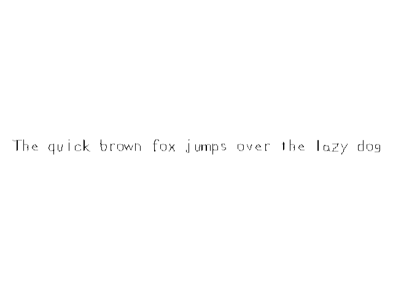

True Type Fonts

Last Updated: Jun 7th, 2025
Here we're going to show text from TTF fonts using the SDL_ttf library./* Headers */ //Using SDL, SDL_image, SDL_ttf and STL string //Using SDL and STL string #include <SDL3/SDL.h> #include <SDL3/SDL_main.h> #include <SDL3_image/SDL_image.h> #include <SDL3_ttf/SDL_ttf.h> #include <string>
Make sure to have SDL_ttf installed and configured in your project and don't forget to include the SDL_ttf header.
/* Class Prototypes */
class LTexture
{
public:
//Symbolic constant
static constexpr float kOriginalSize = -1.f;
//Initializes texture variables
LTexture();
//Cleans up texture variables
~LTexture();
//Loads texture from disk
bool loadFromFile( std::string path );
#if defined(SDL_TTF_MAJOR_VERSION)
//Creates texture from text
bool loadFromRenderedText( std::string textureText, SDL_Color textColor );
#endif
//Cleans up texture
void destroy();
//Sets color modulation
void setColor( Uint8 r, Uint8 g, Uint8 b);
//Sets opacity
void setAlpha( Uint8 alpha );
//Sets blend mode
void setBlending( SDL_BlendMode blendMode );
//Draws texture
void render( float x, float y, SDL_FRect* clip = nullptr, float width = kOriginalSize, float height = kOriginalSize, double degrees = 0.0, SDL_FPoint* center = nullptr, SDL_FlipMode flipMode = SDL_FLIP_NONE );
//Gets texture attributes
int getWidth();
int getHeight();
bool isLoaded();
private:
//Contains texture data
SDL_Texture* mTexture;
//Texture dimensions
int mWidth;
int mHeight;
};
We're going to be adding the
If you're wondering what that
loadFromRenderedText which creates a texture from the string/color we provide it.If you're wondering what that
#if defined(SDL_TTF_MAJOR_VERSION) does, it checks if SDL_TTF_MAJOR_VERSION is defined which happens when we include SDL_ttf. This is a way to easily exclude the TTF rendering code from the LTexture because when we don't include
SDL_ttf.h, SDL_TTF_MAJOR_VERSION is not defined and it will omit the code sandwiched in the #if defined block. This is an example of a macro (using #include is also a macro) which is code that talks to the compiler.
/* Global Variables */
//The window we'll be rendering to
SDL_Window* gWindow{ nullptr };
//The renderer used to draw to the window
SDL_Renderer* gRenderer{ nullptr };
//Global font
TTF_Font* gFont{ nullptr };
//The texture we're going to render text to
LTexture gTextTexture;
We have a new data type for our TTF font file we're going to load: TTF_Font.
#if defined(SDL_TTF_MAJOR_VERSION)
bool LTexture::loadFromRenderedText( std::string textureText, SDL_Color textColor )
{
//Clean up existing texture
destroy();
//Load text surface
if( SDL_Surface* textSurface = TTF_RenderText_Blended( gFont, textureText.c_str(), 0, textColor ); textSurface == nullptr )
{
SDL_Log( "Unable to render text surface! SDL_ttf Error: %s\n", SDL_GetError() );
}
else
{
//Create texture from surface
if( mTexture = SDL_CreateTextureFromSurface( gRenderer, textSurface ); mTexture == nullptr )
{
SDL_Log( "Unable to create texture from rendered text! SDL Error: %s\n", SDL_GetError() );
}
else
{
mWidth = textSurface->w;
mHeight = textSurface->h;
}
//Free temp surface
SDL_DestroySurface( textSurface );
}
//Return success if texture loaded
return mTexture != nullptr;
}
#endif
Creating a texture from text works much like doing so from a file, but instead of calling
SDL_LoadBMP or IMG_Load to generate the surface, you can use TTF_RenderText_Blended. As you cansee, it otherwise works mostly the same as it does with loading from a file.TTF_RenderText_Blended is just one way to render a surface from text. There are other ways you can check out in the SDL_ttf documentation.
bool init()
{
//Initialization flag
bool success{ true };
//Initialize SDL
if( SDL_Init( SDL_INIT_VIDEO ) == false )
{
SDL_Log( "SDL could not initialize! SDL error: %s\n", SDL_GetError() );
success = false;
}
else
{
//Create window with renderer
if( SDL_CreateWindowAndRenderer( "SDL3 Tutorial: True Type Fonts", kScreenWidth, kScreenHeight, 0, &gWindow, &gRenderer ) == false )
{
SDL_Log( "Window could not be created! SDL error: %s\n", SDL_GetError() );
success = false;
}
else
{
//Initialize font loading
if( TTF_Init() == false )
{
SDL_Log( "SDL_ttf could not initialize! SDL_ttf error: %s\n", SDL_GetError() );
success = false;
}
}
}
return success;
}
Much like how we have to initialize SDL with
SDL_Init, we need to initialize SDL_ttf with TTF_Init.
bool loadMedia()
{
//File loading flag
bool success{ true };
//Load scene font
std::string fontPath{ "08-true-type-fonts/lazy.ttf" };
if( gFont = TTF_OpenFont( fontPath.c_str(), 28 ); gFont == nullptr )
{
SDL_Log( "Could not load %s! SDL_ttf Error: %s\n", fontPath.c_str(), SDL_GetError() );
success = false;
}
else
{
//Load text
SDL_Color textColor{ 0x00, 0x00, 0x00, 0xFF };
if( gTextTexture.loadFromRenderedText( "The quick brown fox jumps over the lazy dog", textColor ) == false )
{
SDL_Log( "Could not load text texture %s! SDL_ttf Error: %s\n", fontPath.c_str(), SDL_GetError() );
success = false;
}
}
return success;
}
To open up a TTF font file we call TTF_OpenFont and pass in the path to the font and the size we want to render the font.
void close()
{
//Clean up textures
gTextTexture.destroy();
//Free font
TTF_CloseFont( gFont );
gFont = nullptr;
//Destroy window
SDL_DestroyRenderer( gRenderer );
gRenderer = nullptr;
SDL_DestroyWindow( gWindow );
gWindow = nullptr;
//Quit SDL subsystems
TTF_Quit();
SDL_Quit();
}
When we're done with a font, we free it with TTF_CloseFont. When we want to close SDL_ttf, we call TTF_Quit.
//Fill the background
SDL_SetRenderDrawColor( gRenderer, 0xFF, 0xFF, 0xFF, 0xFF );
SDL_RenderClear( gRenderer );
//Render text
gTextTexture.render( ( kScreenWidth - gTextTexture.getWidth() ) / 2.f, ( kScreenHeight - gTextTexture.getHeight() ) / 2.f );
//Update screen
SDL_RenderPresent( gRenderer );
Finally, here we render the text texture we loaded.
SDL_ttf has other method of rendering text which you can find in the SDL_ttf documentation. We'll be covering some of them in future tutorials, I just wanted to get started with this one because it's the easiest if you already know how to render SDL textures.
SDL_ttf has other method of rendering text which you can find in the SDL_ttf documentation. We'll be covering some of them in future tutorials, I just wanted to get started with this one because it's the easiest if you already know how to render SDL textures.